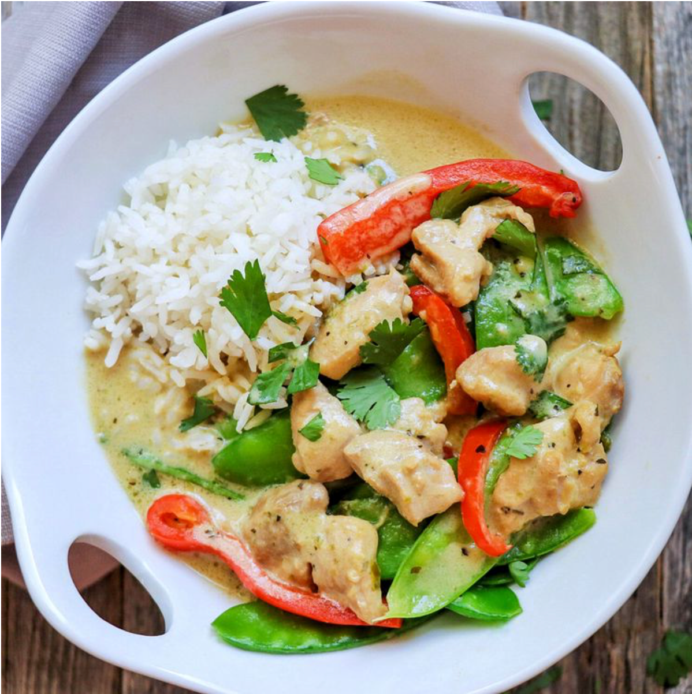

Try our flavorful Thai Green Curry recipe, using chicken tofu or prawns, for a bold tasty meal.
Thai green curry paste is made with aromatic ingredients like cilantro, lemongrass, garlic, and chillies, meaning cooking up a pot of green curry will fill your home with a lovely scent. You can make your own green curry paste at home or buy it from well-stocked grocery stores. Perfectly spicy, but with a hint of sweetness and plenty of creaminess, these Thai green curry recipes will add international flair to your dinner table.